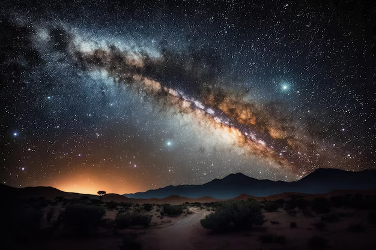
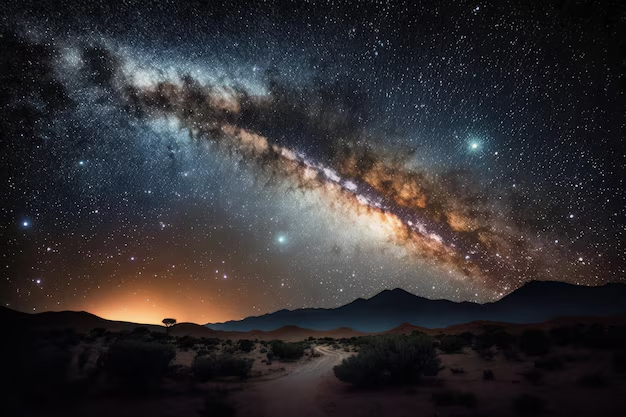

Galáxias
Explorando os mistérios do universo
O que são galáxias?
Galáxias são enormes sistemas de estrelas, gás, poeira e matéria escura, todos ligados pela gravidade. Elas variam em tamanho e formas, mas todas possuem uma grande quantidade de estrelas e outros objetos celestes organizados de forma estável pela gravidade.
 

Como as galáxias são formadas?
As galáxias começaram a se formar logo após o Big Bang, há cerca de 13 bilhões de anos. Elas surgiram da condensação de gases primordiais que se uniram sob a força da gravidade, formando estrelas e, eventualmente, as primeiras galáxias.
Com o tempo, essas galáxias evoluíram, com estrelas se formando e morrendo, e colisões entre galáxias ocorrendo, criando novas estruturas e gerando novos processos de formação estelar.

Tipos de Galáxias
- Galáxias Espirais: Possuem braços espirais que se estendem a partir de um núcleo central, como a Via Láctea.
- Galáxias Elípticas: Têm uma forma arredondada ou elíptica, com uma predominância de estrelas mais velhas.
- Galáxias Irregulares: Não têm uma forma definida e são geralmente menores e desorganizadas.
- Galáxias Lenticulares: Têm uma forma entre as galáxias espirais e elípticas, com um disco plano, mas sem os braços espirais.
Curiosidades
A Via Láctea, nossa galáxia, contém centenas de bilhões de estrelas e um buraco negro supermassivo em seu centro, que influencia a estrutura da galáxia.
As galáxias podem se fundir umas com as outras, criando novas galáxias ainda maiores. Um exemplo famoso disso é a futura colisão da Via Láctea com a Galáxia de Andrômeda.